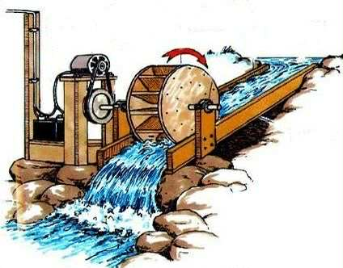
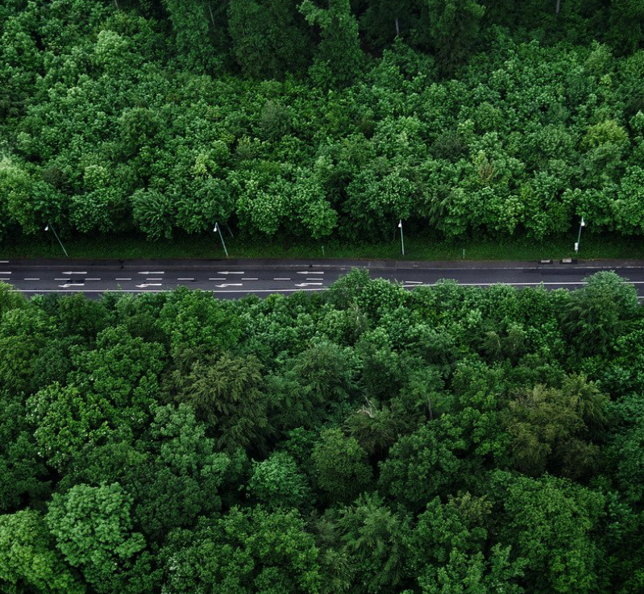
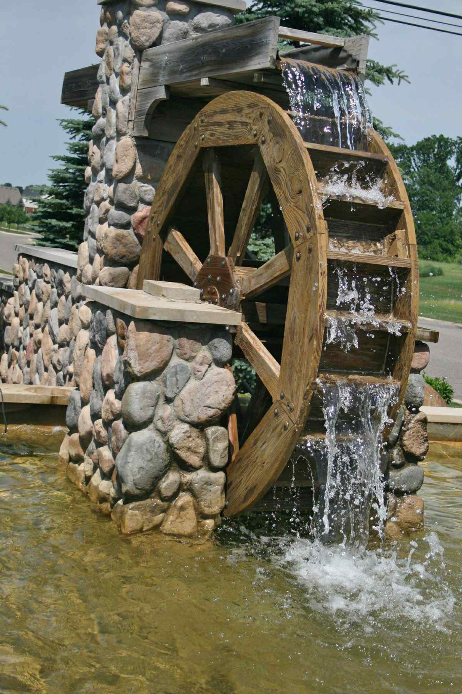

Advantages & Disadvantages
Advantage
- Promotes clean energy and reduces reliance on fossil fuels.
- Provides reliable electricity to rural communities.
- Environmentally friendly, especially with small-scale setups.
- Uses local water sources and recycled materials, reducing costs.
- Scalable and sustainable, ideal for other rural areas too.

Disadvantage
- Depends on water availability, limiting its use in dry areas.
- Affected by seasons and climate changes.
- Needs technical planning and community effort to set up.
- Low power output may not meet large energy demands.
- Requires maintenance, especially when using recycled materials.

Possible Solutions for Disadvantages
- For Limited Water Sources – Conduct site assessments, use hybrid systems (solar/wind), and install small reservoirs to regulate flow.
- For Seasonal or Climate Dependence – Design for seasonal changes, add backup sources (like batteries or solar), and use efficient turbines for low water flow.
- For Setup Challenges – Partner with experts, conduct community training, and use simple, modular designs with local materials.
- For Low Power Output – Focus on essential appliances, optimize system design, or combine multiple turbines for higher output.
- For Maintenance Issues – Strengthen recycled parts, schedule regular checks, and mix recycled with durable materials for longer use.
